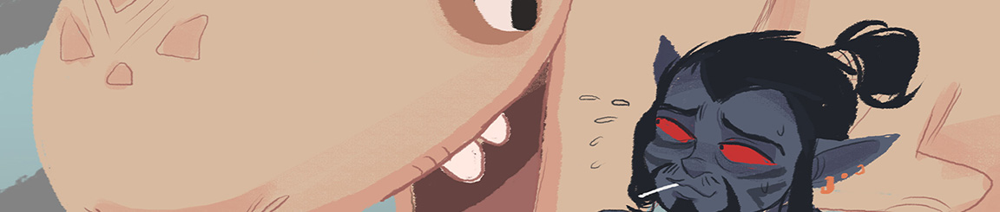

About
Hi there! I'm Tudy Gallahan, a freelance 3D artist and illustrator. I graduated from Ringling College of Art and Design in May 2016 with a degree in Game Art and Design and a focus in Creative Writing. My favorite genre is definitely high fantasy with LOTS of lore and background to explore. I love creating universes and building on existing ones, which plays on my love for role-playing games such as The Elder Scrolls, Dragon Age, World of Warcraft, and much more. I'm currently looking for opportunities to get my foot in the door of the games industry.
My other interests include: lemurs, reptiles of all sorts, cute robots, biking, and tabletop gaming.
You can contact me through email at ewgallahan@gmail.com. Any other information can be found on my resume. Thanks!